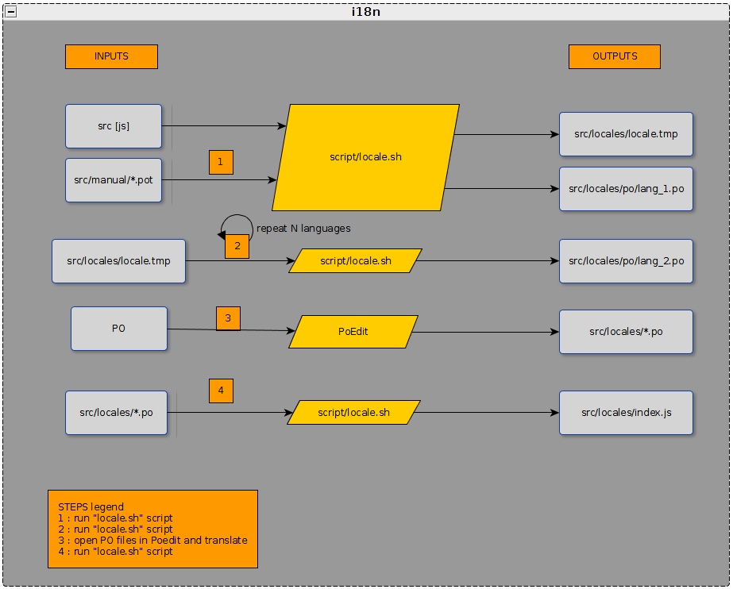
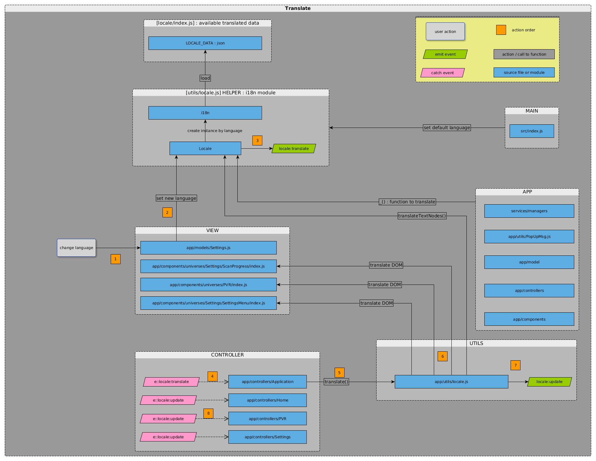

Changer la langue de l’interface :
via le menu
traduction à la volée des menus de configuration
/!\ atttention si changement de la langue via le code - ce n’est pas géré (faut passer par le menu)
requête PUT config/settings/locale
update de la Home
Ajouter une nouvelle langue à traduire
Modifier la variable LOCALES dans locale.sh
Lancer le script pour générer le .po
Lancer le script pour mettre à jour index.js
Rajouter des chaînes de caractères traductible
create POT from JS source files in [apps_frog-ui/src] (cf. 1)
/!\ add output args “-o” to define output file
merge with POT added manually (cf. 1)

babel to extract translatable content from js files
$ sudo apt-get install babel
python-babel python module for Babel
$ sudo apt-get install python-babel
gettext to use msginit tool to create (*.po) translation files
$ sudo apt-get install gettext
$ sudo apt-get install python-pip
$ sudo pip install pojson
$ sudo apt-get install poedit

locales/index.js
LOCALE_DATA
utils/locale.js
class i18n
- charge les LOCALE_DATA et fournit la traduction d’une chaîne dans la langue
/!\ autant d’instance que de langueclass Locale
- instantie un i18n à partir des LOCALE_DATA et la langue demandée
- fournit les fonctions de traduction d’une chaîne de caractère ou d’un ensemble d’élément du DOM
- envoie un evenement lors d’un changement de langue via le menu
app/utils/locale.js
translate DOM (SettingsMenu, manualRecord and ScanProgress-services-found) already loaded
envoie un event après traduction “locale:update”
_(“translate me”)
appelée dans tout le code pour traduite
- pas unifié
- Il faut identifier les chaînes qui sont à traduire, elles peuvent être encapsulées dans différentes structure de données ou variables (e.g : items.label, attributes.comment.default)
- Les chaînes répertoriées manuellement dans manual/*.pot ne précisent pas le référencement au fichier source
Un joyeux bazar
pas unifié
Référencer au moins les noms de fichier dans les POT manuel et préfixer TOUTES les chaînes à traduire par _(“”)
même script à lancer plusieurs fois et qui va faire des actions différentes à chaque fois)
Découper le script :
src_to_pot, pot_to_po (merge and add new languages), po_to_js